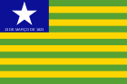
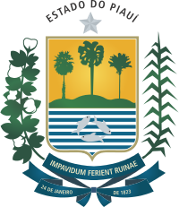

Piauí é uma das 27 unidades federativas do Brasil. Localiza-se no noroeste da Região Nordeste, engloba a Sub-Região Meio-Norte do Brasil. Limita-se com cinco estados: Ceará e Pernambuco a leste, Bahia a sul e sudeste, Tocantins a sudoeste e Maranhão a oeste. Delimitado pelo Oceano Atlântico ao norte, o Piauí tem o menor litoral do Brasil, com 66 km. Sua área é de 251 577,738 km², sendo pouco maior que o Reino Unido, e tem uma população de 3 289 290 habitantes.
A capital e cidade mais populosa do estado é Teresina. Está dividido em 4 mesorregiões e 15 microrregiões, divididos em 224 municípios. Os municípios com população superior a oitenta mil habitantes são Teresina, Parnaíba e Picos. Tem um relevo moderado e a regularidade da topografia é superior a 53% inferiores aos 300m. Parnaíba, Poti, Canindé, Piauí e São Nicolau são os rios mais importantes e todos eles pertencem à bacia do rio Parnaíba. Possui clima tropical e semiárido.
As principais atividades econômicas do estado são a indústria (química, têxtil, de bebidas), a agricultura (algodão, arroz, cana-de-açúcar, mandioca) e a pecuária. A região do Piauí começou a ser povoada pelos colonizadores europeus e sobretudo portugueses no século XVII, desde o interior, na época em que vaqueiros, vieram principalmente da Bahia, à procura de pastos. Em 1718, o território, até então pertencente à Bahia, passou a fazer parte do Maranhão. Em 1811, o príncipe Dom João, cinco anos antes de ser coroado rei de Portugal, elevou o Piauí à categoria de capitania independente.
Depois que o Brasil tornou-se independente, em 1822, as tropas com fidelidade a Portugal ocuparam a cidade de Parnaíba; as adesões foram recebidas pelo grupo, mas os piauienses acabaram por derrotar os portugueses em 1823. Certos anos após a batalha, por movimentos revoltosos, como a Confederação do Equador e a Balaiada, o Piauí também foi atingido. Em 1852, o governo provincial transferiu a capital de Oeiras para Teresina, desde então o estado começou a crescer economicamente. Desde a Proclamação da República no Brasil, foi apresentado pelo estado que o terreno político tornou-se tranquilo, mas foi muito difícil que o Piauí se desenvolvesse social e economicamente.
|  |  |
| Bandeira do Piaui | Brasão |
Localização do Piauí no mapa
Inicialmente, as terras do Piauí receberam a denominação de Piagüí, nome dado pelos seus indígenas. Mais tarde, chamaram-nas Piagoí. Somente depois é que ficaram conhecidas por Piauí. O topônimo "Piauí" vem da língua tupi, na qual significa "rio das piabas" Também existe a teoria que a palavra Piauí significa "terra dos piagas", ou seja, terra de pajés e povos indígenas.
No Piauí, há vestígios da presença do homem que datam de há até 50 000 anos. Estes estão presentes no Parque Nacional da Serra da Capivara, na Serra das Confusões e em Sete Cidades. O Parque Nacional da Serra da Capivara é, sem dúvida, o mais importante. Lá, foram encontradas a cerâmica mais velha da América, um bloco de tinta de 10 000 anos, fósseis humanos e animais, pinturas rupestres e outros artefatos antigos. Os achados estão no Museu do Homem Americano.
A Serra da Capivara foi descoberta por caçadores nas proximidades da cidade-sede: São Raimundo Nonato, os quais, sem saber de que se tratavam as pinturas rupestres, chamaram o prefeito que, surpreso, tirou fotos. Seis anos depois, em uma conferência em São Paulo, o mesmo prefeito, por coincidência, encontrou Niède Guidon e mostrou as fotos à pesquisadora. Esta tanto se interessou, que a levou a se mudar para a Serra, onde ainda reside, fazendo pesquisas.
O "homem de Pedra Furada" viveu há cerca de 40 mil atrás (paleoíndio) na região onde hoje é o Piauí, e lá caçava e acendia fogueiras.
No começo do século XVII, fazendeiros da região do rio São Francisco procuravam expandir suas criações de gado. Vaqueiros, vindos principalmente da Bahia, chegaram procurando pastos e passaram a ocupar as terras ao lado do rio Gurgueia. Ainda no século XVII, muitos nobres portugueses empobrecidos e padres jesuítas, bem como escravos negros se estabeleceram no Piauí. A primeira pecuária em grande escala também chegou com esses colonos. Em 1718, o território, até então sob a jurisdição da Bahia, passou para a do Maranhão. O capitão português Domingos Afonso Mafrense, ou capitão Domingos Sertão, como era conhecido, foi um dos sesmeiros que ocuparam essas terras; possuía trinta fazendas de gado e foi o mais alto colonizador da região, doando suas fazendas — após sua morte — aos padres jesuítas da Companhia de Jesus.
A contribuição dos padres jesuítas foi decisiva, principalmente no desenvolvimento da pecuária, que, em meados do século XVIII, atingiu seu auge. A região Nordeste, o Maranhão e as províncias do sul eram abastecidas pelos rebanhos originários do Piauí até a expulsão dos jesuítas (período pombalino), quando as fazendas foram incorporadas à Coroa portuguesa e entraram em declínio. Quanto à colonização, esta se deu do interior para o litoral.
Após a independência do Brasil em 1822, algumas províncias continuaram sobre o poder de Portugal (entre essas, o Piauí). Portugal, com medo de perder essa província, mandou, de Oeiras à cidade de Parnaíba, tropas portuguesas; o grupo recebeu adesões, mas acabou derrotado em 1823, por ocasião da Batalha do Jenipapo, onde piauienses lutaram contra os portugueses com armas brancas em Campo Maior. A tropa de Fidié, capitão da tropa portuguesa, saiu enfraquecida e este acabou por ser preso em Caxias, no Maranhão. Alguns anos depois, movimentos revoltosos, como a Confederação do Equador e a Balaiada, atingiram também o Piauí.
A ideia da transferência da capital do Piauí de Oeiras remonta aos períodos coloniais. Já no século XVIII, quando a capitania do Piauí adquiriu a sua independência do Maranhão, Fernando Antônio de Noronha, então governador da capitania do Piauí, propôs ao rei de Portugal a transferência da capital, alegando que Oeiras era uma terra seca e estéril, imprópria para a agricultura e de difícil comunicação com as outras partes da colônia. Durante anos, sempre foram citadas as povoações de Parnaíba, vila ao litoral de intenso comércio e a vila do Poti, às margens do rio Parnaíba, que convivia problemas com as cheias dos rios, mas que, por localizar-se no interior, poderia integrar o estado através da navegação pelo rio Parnaíba.
No governo de José Idelfonso de Sousa Ramos, foi votada e sancionada a lei nº174, de 27 de agosto de 1844, que autorizava a mudança da capital, não para a vila de Parnaíba ou para a vila do Poti, localidades sempre lembradas, mas para a margem do rio Parnaíba na foz do rio Mulato, devendo a nova cidade receber o nome de Regeneração. Quando, em 23 de julho de 1850, José Antônio Saraiva, fundador de Teresina, fora nomeado governador da Província do Piauí, o assunto da transferência da capital estava em plena efervescência. Logo após assumir, Saraiva recebeu uma delegação das vilas de Parnaíba, Piracuruca e Campo Maior com um grande número de assinaturas reivindicando a mudança da capital para Parnaíba. Diante dessa situação, o novo governador procurou estudar o assunto com profundidade. Nas suas pesquisas, constatou que muitas eram as sugestões para se edificar uma nova capital às margens do rio Parnaíba.
Em manobra audaciosa, Antônio Saraiva, em 1852, decidiu pela transferência para a vila do Poti com a condição de que uma nova sede fosse construída em local a salvo das enchentes que assolavam a vila. Graças ao empenho da população local, o projeto pôde se concretizar e, em 16 de agosto de 1852, foi instituída a nova capital da Província do Piauí, com o nome de Teresina em homenagem à imperatriz Teresa Cristina de Bourbon. Rapidamente, todo o império foi informado da nova capital.
Foi em 1926 a passagem pelo Piauí do movimento político-militar de origem tenentista chamado Coluna Prestes. A Coluna foi uma marcha pelo interior do Brasil em defesa de reformas políticas e sociais e contra a conjuntura desigual da República Velha. Cerca de 1 200 homens, chefiados por Juarez Távora, Miguel Costa e Luís Carlos Prestes, percorreram, durante 29 meses, 25 000 quilômetros nos estados de Mato Grosso, Goiás, Minas Gerais, Piauí, Ceará, Rio Grande do Norte, Paraíba, Pernambuco e Bahia. Ao final de 1926, com mais da metade dos combatentes atacados pelo cólera e sem poder continuar a luta, a Coluna procurou asilo na Bolívia. fontes]
A invencibilidade da Coluna Prestes contribuiu para o prestígio político do tenentismo e reforçou as críticas às oligarquias. Sua atuação ajudou a abalar os alicerces da República Velha, a preparar a Revolução de 1930 e a afirmar a liderança nacional de Luís Carlos Prestes. A Coluna Prestes esteve presente duas vezes no estado, sendo recepcionada de diferentes maneiras. Em Floriano, o movimento foi recebido com festa pelos comerciantes descendentes de árabes e com pavor pela população local. Segundos relatos, a cidade praticamente ficou deserta e houve saques inclusive aos cofres da prefeitura.
Na capital, Teresina, a passagem da Coluna Prestes deixou rastro de pavor e o pânico tomou conta da população. Segundo historiadores, o então governador tentou, sem sucesso, impedir a entrada na capital através da construção de um canal ligando os rios Poti e Parnaíba. Dentre os fatos mais importantes da passagem do movimento pela capital, vale destacar a prisão de Juarez Távora. Este não foi "justiçado", isto é, não sofreu violência por conta da atuação dos oficiais do Exército brasileiro, que comandavam as tropas legalistas, chefiadas pelo tenente Jacob Manuel Gayoso e Almendra.